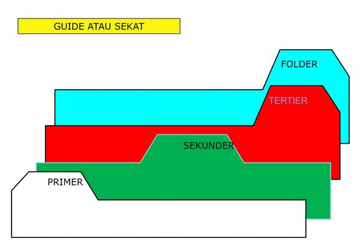

Arsip Nasional Republik Indonesia

Sejarah Arsip Nasional Republik Indonesia
Tahun 1967 merupakan suatu periode yang sangat penting bagi Arsip Nasional,
karena berdasarkan Keputusan Presiden 228/1967 tanggal 2 Desember 1967,
Arsip Nasional ditetapkan sebagai Lembaga Pemerintah Non Departemen yang
bertanggungjawab langsung kepada Presiden. Sementara anggaran pembelanjaannya dibebankan kepada anggaran Sekretariat Negara.
Penetapan Arsip Nasional sebgai Lembaga Pemerintah Non Departemen diperkuat melalui Surat Pimpinan MPRS No. A.9/1/24/MPRS/1967 yang menegaskan,
bahwa Arsip Nasional sebagai aparat teknis pemerintah tidak bertentangan dengan UUD 1945, bahkan merupakan penyempurnaan pekerjaan di bawah Presidium Kabinet.
Dengan status baru tersebut, maka pada tahun 1968 Arsip Nasional berusaha menyusun pengajuan sebagai berikut:
1. Mengajukan usulan perubahan Arsip Nasional menjadi Arsip Nasional RI.
2. Mengajukan usulan perubahan Prps No.19/1961 menjadi Undang-undang tentang Pokok-pokok Kearsipan.
Sekitar Arsip
ARSIP STATIS
Tentang Arsip Statis
Arsip Statis adalah arsip yang dihasilkan oleh pencipta arsip karena memiliki nilai guna kesejarahan,
telah habis retensinya, dan berketerangan dipermanenkan yang telah diverifikasi baik secara langsung
maupun tidak langsung oleh Arsip Nasional Republik Indonesia dan/atau lembaga kearsipan.
Arsip Statis yang dikelola oleh Arsip Nasional Republik Indonesia merupakan Arsip bernilai guna kesejarahan yang telah diserahkan oleh Pencipta Arsip yaitu
Kementerian/Lembaga/BUMN/Organisasi Masyarakat/Organisasi Politik/Perorangan.
Daftar Arsip Statis
Sarana bantu penemuan arsip statis berupa uraian deskripsi informasi yang sekurang-kurangnya memuat nomor arsip,
bentuk redaksi, isi ringkas, kurun waktu penciptaan, tingkat perkembangan, jumlah, dan kondisi arsip.
Inventaris Arsip
.jpeg) Sarana bantu penemuan kembali arsip statis berupa uraian deskripsi informasi yang disusun berdasarkan skema pengaturan arsip yang
dilengkapi dengan sejarah dan fungsi/peran pencipta arsip, riwayat arsip, sejarah penataan arsip, tanggung jawab teknis penyusunan,
indeks, daftar istilah asing, struktur organisasi untuk arsip kelembagaan atau riwayat hidup untuk arsip perseorangan, dan konkordan
(petunjuk perubahan terhadap nomor arsip pada inventaris arsip yang lama ke dalam inventaris arsip yang baru).
Sarana bantu penemuan kembali arsip statis berupa uraian deskripsi informasi yang disusun berdasarkan skema pengaturan arsip yang
dilengkapi dengan sejarah dan fungsi/peran pencipta arsip, riwayat arsip, sejarah penataan arsip, tanggung jawab teknis penyusunan,
indeks, daftar istilah asing, struktur organisasi untuk arsip kelembagaan atau riwayat hidup untuk arsip perseorangan, dan konkordan
(petunjuk perubahan terhadap nomor arsip pada inventaris arsip yang lama ke dalam inventaris arsip yang baru).
Guide Arsip

Sarana bantu penemuan arsip statis berupa uraian informasi mengenai khasanah arsip statis yang tersimpan baik secara keseluruhan maupun tematis di lembaga kearsipan.
ARSIP DINAMIS
Tentang Arsip Dinamis
 Arsip dinamis adalah arsip yang digunakan secara langsung dalam kegiatan pencipta arsip dan disimpan selama jangka waktu tertentu.
Sedangkan pengelolaan arsip dinamis adalah proses pengendalian arsip dinamis secara efisien, efektif, dan sistematis yang meliputi penciptaan,
penggunaan dan pemeliharaan, serta penyusutan arsip.
Arsip dinamis adalah arsip yang digunakan secara langsung dalam kegiatan pencipta arsip dan disimpan selama jangka waktu tertentu.
Sedangkan pengelolaan arsip dinamis adalah proses pengendalian arsip dinamis secara efisien, efektif, dan sistematis yang meliputi penciptaan,
penggunaan dan pemeliharaan, serta penyusutan arsip.
Pengelolaan Arsip Dinamis
Pengelolaan Arsip dinamis meliputi :
- Arsip vital, merupakan arsip yang keberadaannya merupakan persyaratan dasar bagi kelangsungan operasional pencipta arsip,
tidak dapat diperbarui, dan tidak tergantikan apabila rusak atau hilang.
- Arsip aktif, merupakan arsip yang frekuensi penggunaannya tinggi dan/atau terus menerus.
- Arsip inaktif, merupakan arsip yang frekuensi penggunaannya telah menurun.
Pengelolaan arsip dinamis dilaksanakan untuk menjamin ketersediaan arsip dalam penyelenggaraan kegiatan
sebagai bahan akuntabilitas kinerja dan alat bukti yang sah.
Tata Naskah Dinas
 Tata naskah dinas, adalah pengaturan tentang jenis, format, penyiapan, pengamanan, pengabsahan,
distribusi dan media yang digunakan dalam komunikasi kedinasan.
Tata naskah dinas, adalah pengaturan tentang jenis, format, penyiapan, pengamanan, pengabsahan,
distribusi dan media yang digunakan dalam komunikasi kedinasan.
Klasifikasi Arsip
Klasifikasi arsip, adalah pola pengaturan arsip secara berjenjang dari hasil pelaksanaan fungsi dan
tugas instansi menjadi beberapa kategori unit informasi kearsipan.
Jadwal Retensi Arsip
Jadwal retensi arsip, yang disusun berdasarkan pedoman retensi arsip yang telah dibuat.
Pedoman retensi arsip merupakan ketentuan dalam bentuk petunjuk yang memuat retensi arsip masing-masing urusan pemerintahan
yang menjadi dasar dalam penyusunan jadwal retensi arsip di setiap lembaga negara, pemerintahan daerah, perguruan tinggi negeri, serta BUMN dan/atau BUMD.
Sistem Klasifikasi Keamanan dan Akses Arsip
Sistem klasifikasi keamanan dan akses arsip, yang disusun sebagai dasar untuk melindungi hak dan kewajiban pencipta arsip dan public terhadap akses arsip.
Sebagai salah satu sumber informasi, arsip harus mudah diakses oleh publik, namun untuk pertimbangan keamanan dan melindungi fisik arsip maka perlu diatur ketentuan tentang pengamanan dan akses arsip dinamis.
KONTAK ANRI